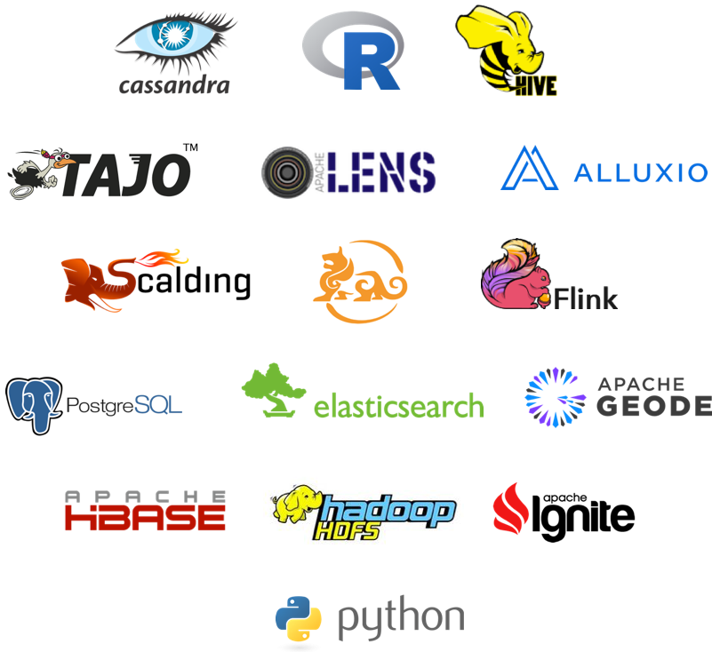

What is Apache Zeppelin ?
Multi-purpose Notebook
The Notebook is the place for all your needs
- Data Ingestion
- Data Discovery
- Data Analytics
- Data Visualization & Collaboration

Multiple Language Backend
Apache Zeppelin interpreter concept allows any language/data-processing-backend to be plugged into Zeppelin. Currently Apache Zeppelin supports many interpreters such as Apache Spark, Python, JDBC, Markdown and Shell.

Adding new language-backend is really simple. Learn how to create a new interpreter.
Apache Spark integration
Especially, Apache Zeppelin provides built-in Apache Spark integration. You don't need to build a separate module, plugin or library for it.

Apache Zeppelin with Spark integration provides
- Automatic SparkContext and SQLContext injection
- Runtime jar dependency loading from local filesystem or maven repository. Learn more about dependency loader.
- Canceling job and displaying its progress
For the further information about Apache Spark in Apache Zeppelin, please see Spark interpreter for Apache Zeppelin.
Data visualization
Some basic charts are already included in Apache Zeppelin. Visualizations are not limited to SparkSQL query, any output from any language backend can be recognized and visualized.

Pivot chart
Apache Zeppelin aggregates values and displays them in pivot chart with simple drag and drop. You can easily create chart with multiple aggregated values including sum, count, average, min, max.

Learn more about basic display systems and Angular API(frontend , backend) in Apache Zeppelin.
Collaborate by sharing your Notebook & Paragraph
Your notebook URL can be shared among collaborators. Then Apache Zeppelin will broadcast any changes in realtime, just like the collaboration in Google docs.

Apache Zeppelin provides an URL to display the result only, that page does not include any menus and buttons inside of notebooks. You can easily embed it as an iframe inside of your website in this way. If you want to learn more about this feature, please visit this page.
100% Opensource

Apache Zeppelin is Apache2 Licensed software. Please check out the source repository and how to contribute. Apache Zeppelin has a very active development community. Join to our Mailing list and report issues on Jira Issue tracker.